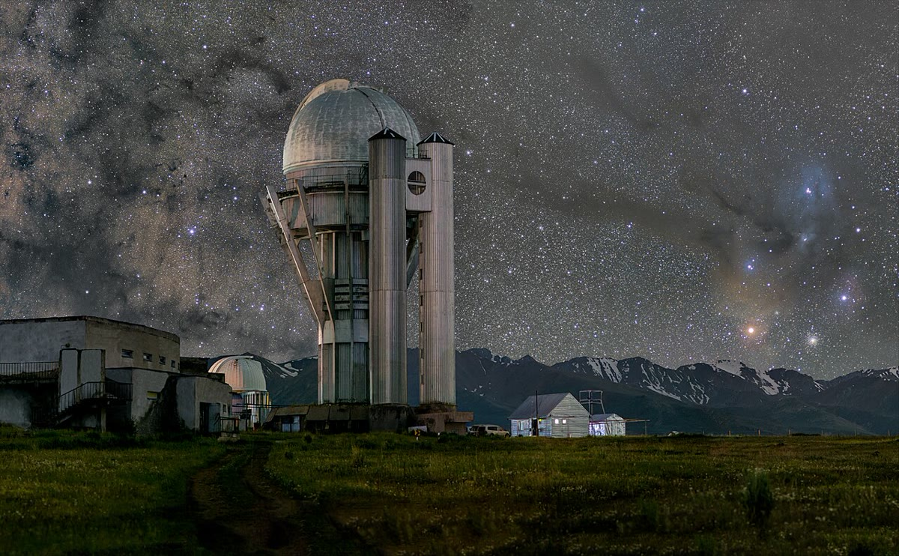

Ciência · 24 de outubro
Observatório da Serra abre visitação noturna ao público
Sessões de sexta e sábado têm 40 vagas; telescópio de 1,2 metro será usado em observações guiadas.

O Observatório da Serra, em Serra Alta, vai abrir o telescópio de 1,2 metro para visitas públicas a partir de novembro. As sessões serão às sextas e aos sábados, com 40 vagas por noite, e incluem uma palestra curta, observação guiada e visita à cúpula.
O observatório fica a 1.450 metros de altitude, a 38 quilômetros do centro de Vale Verde. A viagem dura cerca de 50 minutos de carro, e o acesso final é por uma estrada de terra. A organização recomenda chegar com 30 minutos de antecedência e levar agasalho, mesmo em noites de primavera.
O que será possível ver
Em noites de céu limpo, o telescópio permite observar planetas, nebulosas e aglomerados estelares. A programação de novembro inclui Saturno, a nebulosa de Órion e a galáxia de Andrômeda. Monitores explicam o funcionamento do equipamento e ajudam o público a tirar fotos pelo adaptador do celular.
“A ideia é aproximar a astronomia de quem nunca olhou por um telescópio. Não precisa ser especialista”, disse o astrônomo responsável, Otávio Lemos. Ele lembra que a observação depende das condições do tempo; em caso de nuvens, a sessão é substituída por uma visita ao laboratório e por uma apresentação no planetário digital.
“O céu da serra é um patrimônio. Queremos que as pessoas entendam por que vale a pena protegê-lo da poluição luminosa.”
Otávio Lemos, astrônomo responsável
Ingressos e acesso
Os ingressos custam R$ 20 (inteira) e R$ 10 (meia), com gratuidade para estudantes da rede pública e moradores de Serra Alta. A reserva é feita pelo site do observatório e abre sempre às segundas-feiras, às 10h. Não há venda na porta.
O local tem banheiros, área de espera coberta e um pequeno café. A cúpula principal não é totalmente acessível a cadeirantes; a organização oferece uma sessão com telescópio portátil no pátio, mediante agendamento. Crianças menores de 6 anos não podem subir à cúpula, mas participam da atividade externa.
A prefeitura espera que a visitação movimente o turismo em Serra Alta, que já recebe caminhantes e ciclistas. Comerciantes locais planejam abrir mais cedo nos fins de semana. A temporada de visitas vai até março de 2027.